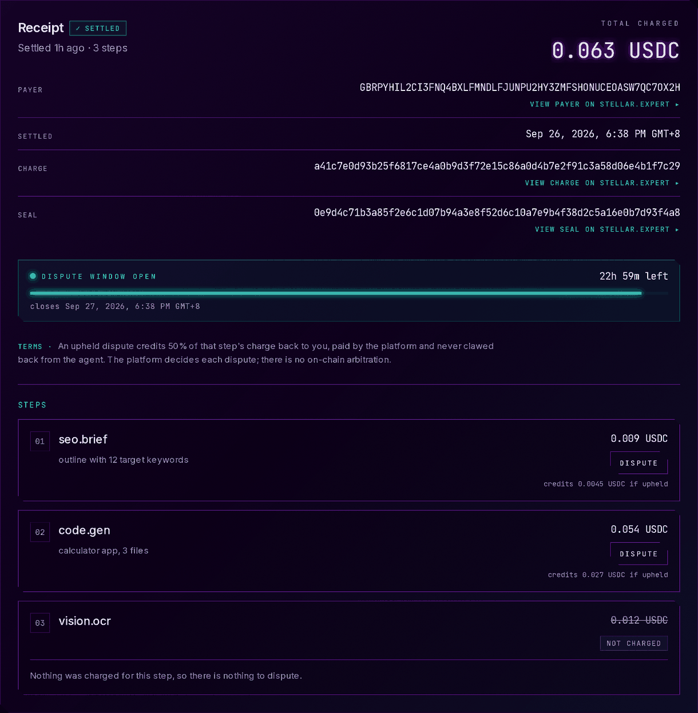
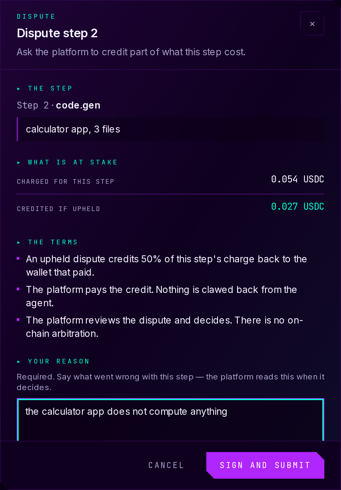
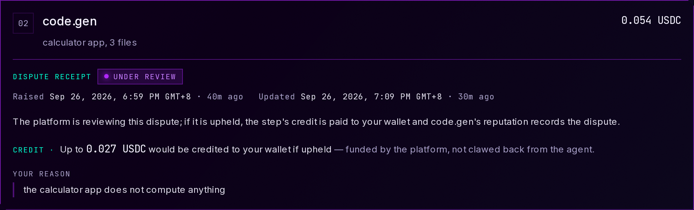
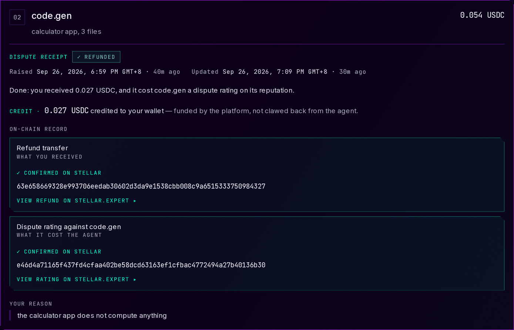
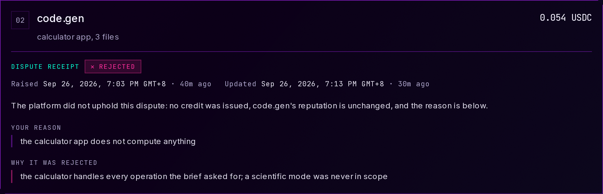

Stellar Instawards (Cohort 2026)
Orizon Agents — Week 3 · Technical Documentation & Demo Evidence
What shipped in Week 3 on Stellar testnet, how the money path is kept
safe, how to verify it live — and, plainly, what is not evidenced yet.
| Programme |
Stellar Instawards (Cohort 2026) — Blue Belt Instaward Sprint |
| Milestone |
M3 · Week 3 — Dispute Window & Partial-Credit Refund
(Deliverable D3, Epic 4)
|
| Sprint week |
Mon 2026-09-21 → Fri 2026-09-25 · evidence assembled 2026-09-26
|
| Network |
Stellar testnet only |
| Team |
Danielle Bagaforo Meer — lead engineer (GitHub
ALGOREX-PH)
Rieselle Saure (“Rie”) —
PM + QA (GitHub rie-hash14)
|
| This week |
14 pull requests merged · 1,295 commits · +45,936 / −1,152 on
main · 908 commits authored by the lead
engineer, 268 by QA
|
| Live application |
https://orizons.xyz · API
https://orizon-agents-be-stellar.onrender.com/docs
|
Contents
|
Links at a glance — app, API, repositories, design records,
contracts, transactions, PRs
|
p. 2–3 |
|
Walkthrough A — The dispute path, as the buyer sees it
|
p. 4 |
| A1 |
The settlement, and the window that opens on it |
p. 4 |
| A2 |
Raising a dispute on one step, with a wallet signature |
p. 5 |
| A3 |
An open dispute: a promise, not a payment |
p. 6 |
| A4 |
A credited dispute, with both artifacts confirmed on-chain |
p. 6 |
| A5 |
A credit recorded whose transfer has not confirmed |
p. 7 |
| A6 |
A rejection, with the platform’s reason |
p. 7 |
|
Walkthrough B — The money path: six things that stop it paying
twice, or paying at all
|
p. 8 |
| B1 |
The claim row is written before the signature |
p. 8 |
| B2 |
The precondition is a clause of the statement that writes |
p. 8 |
| B3 |
The three-way clamp, and a hard ceiling before anything is signed
|
p. 9 |
| B4 |
The adjudication door fails closed, and the switch ships off |
p. 10 |
| B5 |
Nothing reads as done until the chain confirms it |
p. 10 |
| B6 |
The window is stamped on the settlement, never recomputed |
p. 11 |
|
Walkthrough C — Verify it yourself: the live API, and two
transactions on-chain
|
p. 12 |
| C1 |
GET /api/stellar/network — testnet, the contracts, and an open
decision
|
p. 12 |
| C2 |
GET /readiness — our signer is the ledger’s authorised scorer |
p. 12 |
| C3 |
GET /openapi.json — six dispute routes, and no operator security
scheme
|
p. 13 |
| C4 |
The six routes in the interactive docs |
p. 13 |
| C5 |
The refund switch, answered live |
p. 14 |
| C6 |
How independent QA presents the two transactions |
p. 14 |
| C7 |
The refund transfer on Stellar Expert |
p. 15 |
| C8 |
The kind=“dispute” rating on Stellar Expert |
p. 16 |
|
Walkthrough D — Independent QA: what a second pair of eyes found
|
p. 17 |
| D1 |
The public UAT repository: suites, drills and evidence |
p. 17 |
| D2 |
The defect register, and the two defects that are not public |
p. 18 |
| D3 |
Eleven found against our own hardening build — including one our fix
caused
|
p. 19 |
| D4 |
The verdict: no-go |
p. 20 |
|
Why D3 has no evidence run yet — the gating defect
|
p. 21 |
| The path to the D3 evidence run, in order |
p. 22 |
|
Demo video — there is no Week-3 recording; the Week-2 post
|
p. 23 |
How to read this. Each step names the page to open, top right,
and what to look for. Numbered orange outlines
1 match the numbers in the text; they are
drawn by this document over the unaltered screenshot. Every URL here is
a live link. Two kinds of screenshot, never mixed: Walkthrough
A’s six frames are local captures against the end-to-end suite’s
test fixtures — every hash in them exists on no ledger — and
every page and caption carrying one says so. Everything else was
captured on 2026-09-26 from the live deployment and from public GitHub,
Stellar Expert and X pages; no wallet was connected and nothing was
signed, paid or submitted for any of them.
LinksAt a glance · 1 of 2
The live application, the API, the repositories and the design records
Everything below is public. The application and the API run on Stellar
testnet; the documentation lives in the public GitHub repositories.
Nothing here needs a login.
Deployed application and backend API (live)
The five public repositories
Design records and the operator runbook for this epic
All under
github.com/Bl0cksmiths/Orizon-Agents-BE-Stellar/blob/main/docs/; each row links the full address.
LinksAt a glance · 2 of 2
Contracts, transactions, pull requests, QA — and where the demo video is
not
Contracts and transactions open on Stellar Expert (testnet). Each link
shows the full id or hash, so the page also works printed.
Stellar Expert — deployed contracts (testnet, unchanged this week)
The two testnet transactions in this document
Both are real and confirmed, and neither is Deliverable 3: they
were produced by driving the real backend code against a
drill ReputationLedger with a test asset, from a developer
machine. Walkthrough C sets out exactly what they do and do not prove.
Merged this week — 14 pull requests, 1,295 commits, +45,936 / −1,152 on
main
Behind them: backend 2,177 tests at 92.53% line coverage (the
gate the 4.07 merge landed under, floor 82%) and frontend
1,503 unit and 149 end-to-end tests, all passing, CI green on
main in both. The frontend’s end-to-end tests run against a
mocked backend with hashes that exist on no ledger —
test evidence, not on-chain evidence, and the source of
Walkthrough A’s frames.
|
BE #60
|
4.02 — the dispute window, the dispute routes, and a durable
settlement record
|
2026-09-21 |
|
BE #61
|
4.03 — partial-credit refund, review PR (stacked; did not reach
main)
|
2026-09-21 |
|
BE #62
|
4.03 — the same work, landed on main |
2026-09-21 |
|
BE #63
|
4.04 — negative on-chain rating for an upheld dispute |
2026-09-21 |
|
BE #64
|
4.05 — settlement view for the dispute receipt |
2026-09-21 |
|
BE #65
|
4.06 — what a dispute receipt needs to be truthful |
2026-09-22 |
|
BE #42
|
chore — untrack evidence and ops docs |
2026-09-22 |
|
BE #75
|
4.07 — Epic 4 hardening: money path, disclosure, settlement ratings
|
2026-09-25 |
|
FE #65
|
Week-2 evidence — Proof of Deliverables summary pages |
2026-09-21 |
|
FE #66
|
Week-2 evidence — Technical Documentation PDF, 17 pages |
2026-09-21 |
|
FE #68
|
4.05 — dispute action on the trace / receipt view |
2026-09-21 |
|
FE #69
|
4.06 — dispute status and refund receipt display |
2026-09-22 |
|
FE #76
|
4.07 — the receipt stops stating what it cannot show |
2026-09-25 |
|
UAT #4
|
Rie’s Week-3 QA — seven 6.03 sub-suites, five drills, D-050 → D-076
|
2026-09-26 |
Independent QA, and the demo video
Walkthrough ABuyer · Deliverable D3 — Dispute Window & Partial-Credit
Refund
The dispute path, as the buyer sees it
When a paid workflow settles, its buyer has 24 hours to dispute
any single step of it. Proof is a signature from the wallet that paid —
no account and no password. An upheld dispute credits part of that
step’s charge back from the platform’s own wallet, and writes a
permanent negative rating against the agent on the ReputationLedger. Six
frames follow the whole path, including the one state this epic exists
to get right.
These six frames are local runs against test fixtures, not the
deployment.
They were captured on 2026-09-26 from the shipped interface at frontend
commit 5105a8b, served by next dev and
answered entirely by the end-to-end suite’s stubs
(e2e/mocks.ts).
Every transaction hash in them is a fixture: it exists on no ledger,
and the Stellar Expert link beside it resolves to nothing.
No wallet was connected to anything real; nothing was signed, paid or
submitted. They are evidence of the interface — never of a
settlement, a refund or a rating having happened. The reason the
deployment cannot show this path is on page 21.
Above the trace, a receipt panel states what was charged (0.063 USDC),
who paid it, when it settled, and the charge and seal transactions.
DISPUTE WINDOW OPEN · 22h 59m left carries the closing instant
beside it — read from the settlement record, never recomputed (B6).
The terms are stated before any action: an upheld dispute credits
50% of the step’s charge in this fixture,
paid by the platform and never clawed back from the agent, and
the platform decides, with no on-chain arbitration. Each delivered
step then carries its own price, a DISPUTE button and what it
would credit; the step that failed is marked NOT CHARGED —
“Nothing was charged for this step, so there is nothing to dispute”.
The 50% here is the fixture’s policy (credited_fraction: 0.5), chosen so a figure on screen can only have been served by the
policy and never hard-coded in the copy. The backend’s own shipped
default is a full credit of the step.

the receipt panel of the trace view (fixture data) ·
local capture against test fixtures — not the deployment ·
../screenshots/local-01-dispute-action-open-window.png · captured
2026-09-26 19:42 PHT
Walkthrough ABuyer · Deliverable D3 — Dispute Window & Partial-Credit
Refund
These six frames are local runs against test fixtures, not the
deployment.
They were captured on 2026-09-26 from the shipped interface at frontend
commit 5105a8b, served by next dev and
answered entirely by the end-to-end suite’s stubs
(e2e/mocks.ts).
Every transaction hash in them is a fixture: it exists on no ledger,
and the Stellar Expert link beside it resolves to nothing.
No wallet was connected to anything real; nothing was signed, paid or
submitted. They are evidence of the interface — never of a
settlement, a refund or a rating having happened. The reason the
deployment cannot show this path is on page 21.
Dispute step 2 names the step, what was charged for it and what
would be credited if the dispute is upheld, then repeats the three
terms, then takes a mandatory written reason (500 characters,
counted). SIGN AND SUBMIT asks the wallet that paid to sign the
message orizon-dispute:v1:{job_id}:{step}:{nonce} —
domain-separated and covering the exact step, so a captured signature
cannot be replayed against another step or another workflow. Signing
costs nothing and sends no transaction.
Only the payer is offered this. A connected wallet that is not the
payer sees no button and no disabled button — no action of any
kind. Nothing was signed for this frame: the form was filled to
show the enabled control, then closed.

the dispute dialog (fixture data) ·
local capture against test fixtures — not the deployment ·
../screenshots/local-02-dispute-dialog.png · captured 2026-09-26
19:39 PHT
Walkthrough ABuyer · Deliverable D3 — Dispute Window & Partial-Credit
Refund
These six frames are local runs against test fixtures, not the
deployment.
They were captured on 2026-09-26 from the shipped interface at frontend
commit 5105a8b, served by next dev and
answered entirely by the end-to-end suite’s stubs
(e2e/mocks.ts).
Every transaction hash in them is a fixture: it exists on no ledger,
and the Stellar Expert link beside it resolves to nothing.
No wallet was connected to anything real; nothing was signed, paid or
submitted. They are evidence of the interface — never of a
settlement, a refund or a rating having happened. The reason the
deployment cannot show this path is on page 21.
The badge reads UNDER REVIEW, with when it was raised and when
it last changed. The credit is stated as a promise and nothing more —
“Up to 0.027 USDC would be credited … funded by the platform,
not clawed back from the agent” — and the buyer’s own reason is shown
back to them.
No transaction hash appears in this frame, because nothing has been
paid.

one step’s dispute receipt (fixture data) ·
local capture against test fixtures — not the deployment ·
../screenshots/local-03-receipt-open-dispute.png · captured
2026-09-26 19:41 PHT
REFUNDED, and the sentence says what it cost each side: “you
received 0.027 USDC, and it cost code.gen a dispute rating on its
reputation”. Below it the two on-chain rows —
Refund transfer and Dispute rating against code.gen —
each CONFIRMED ON STELLAR, each with its hash painted in full
and a link to Stellar Expert.
Hashes are printed whole, in monospace, wrapping: in a screen
recording a link cannot be inspected, so the characters on screen are
the only thing a reviewer can match against the explorer.
Both hashes here are fixtures and resolve to nothing.
Walkthrough C carries two real ones.

one step’s dispute receipt (fixture data) ·
local capture against test fixtures — not the deployment ·
../screenshots/local-04-receipt-credited.png · captured 2026-09-26
19:41 PHT
Walkthrough ABuyer · Deliverable D3 — Dispute Window & Partial-Credit
Refund
These six frames are local runs against test fixtures, not the
deployment.
They were captured on 2026-09-26 from the shipped interface at frontend
commit 5105a8b, served by next dev and
answered entirely by the end-to-end suite’s stubs
(e2e/mocks.ts).
Every transaction hash in them is a fixture: it exists on no ledger,
and the Stellar Expert link beside it resolves to nothing.
No wallet was connected to anything real; nothing was signed, paid or
submitted. They are evidence of the interface — never of a
settlement, a refund or a rating having happened. The reason the
deployment cannot show this path is on page 21.
This is the state the epic exists to get right. The platform
has recorded the credit, but the chain has not vouched for the
transfer. The badge reads REFUND IN PROGRESS and never
“Refunded”; the credit line stays a promise (“Up to 0.027 USDC
to be credited”); and the Refund transfer row reads
NO TRANSACTION ON RECORD, with no hash and no link, beside a
dispute-rating row that is confirmed.
The sentence is explicit about what happens next: “the platform
reconciles it by hand — you will not be paid twice, and will not be
skipped.” That is the product face of B5: a timed-out transfer is
never retried automatically, because the asset contract has no undo.
Paying late is the deliberate trade against ever paying twice.

one step’s dispute receipt (fixture data) ·
local capture against test fixtures — not the deployment ·
../screenshots/local-05-receipt-crediting-unconfirmed.png · captured
2026-09-26 19:41 PHT
REJECTED: “no credit was issued, code.gen’s reputation is
unchanged, and the reason is below”. The buyer’s own reason is kept,
and beneath it WHY IT WAS REJECTED carries the adjudicator’s
own words. The note is mandatory on the reject route (1–500
characters) and is returned to the buyer, because a rejection with no
explanation is worse than no dispute system at all. Opening a dispute
proves nothing and costs the agent nothing until it is upheld.
No hash and no link appear in this frame, because nothing was paid.
Independent QA found a real cost to the disclosure rule that protects
this text — see D3 on page 18.

one step’s dispute receipt (fixture data) ·
local capture against test fixtures — not the deployment ·
../screenshots/local-06-receipt-rejected.png · captured 2026-09-26
19:43 PHT
Walkthrough BTechnical · the money path and its safeguards
The money path: six things that stop it paying twice, or paying at all
An upheld dispute is the only operation in this service that spends the
platform’s own balance on a person’s say-so, with nothing
on-chain to bound it. A server-signed charge can only ever spend an
allowance the payer already authorised; a credit cannot. Everything
below exists because of that asymmetry, and every claim names the file
and the design record a reviewer can check it against.
Upholding happens in a fixed order. The dispute is recorded
upheld; then a refund claim is taken on it — a row
in a table, keyed by the dispute id, so it survives a restart and only
one caller can ever hold it; the dispute moves to
crediting.
If the claim cannot be taken, nothing is signed at all. Only
then is the amount computed, checked against the ceiling, and the
transfer signed.
Taking the claim and moving the dispute to crediting are
one statement, not two, and concurrency is settled by the
table’s primary key rather than by the status the statement read: the
loser’s ON CONFLICT DO NOTHING returns nothing, and
nothing returned means sign nothing. Two adjudicators clicking
together, a retried request, a process redeployed mid-flight — all
meet the same row. A repeat uphold of a credited dispute
signs no transfer and returns the same refund hash.
Every status transition on a dispute is a compare-and-set, and the
comparison is not a read followed by a write. In the Postgres store,
append_status(…, expected_status=…) spells the
precondition as the final WHERE of the
INSERT … SELECT that performs the transition: the write
lands only while the dispute still reads the status the decision was
computed from, and nothing comes back when it does not. The
mutex-releasing DELETE in the same statement repeats the
same clause, so it cannot fire for a transition that was refused.
uphold passes expected_status="open", and
reject does too. Losing the set is answered
409 adjudication_in_progress or
409 dispute_not_open — never absorbed.
Stated precisely: this is a single-statement compare-and-set in
the Postgres store. The in-memory fallback store holds the same
contract by an ordinary check, which is safe there for a different
reason, and which is one of several reasons
DATABASE_URL must be set in production (page 22, step 5).
Walkthrough BTechnical · the money path and its safeguards
What is transferred is the smallest of three numbers: the
amount frozen on the dispute when it was opened, so the buyer is never
paid less than they were shown and never more; the step’s price times
the policy fraction in force at adjudication, so the stated policy is
honoured; and what the workflow’s charge
actually moved on-chain, so the platform never refunds money it
did not collect. With the shipped policy they are normally the same
number. Each clamp that bites is logged.
Above that sits a hard ceiling: a credit over
MAX_REFUND_USDC (shipped at 1.0) is
refused outright, before any transaction is built. It is
enforced in the one function that produces a refund amount, so no
amount exists that has not been through it — and a non-finite amount
is refused first, because a comparison cannot refuse a NaN. The
ceiling is deliberately separate from the charge cap: one bounds what
a buyer authorised themselves to spend, the other what the
platform pays out of its own wallet. Independent QA’s D-054 is
that a non-finite value of the setting still removes the
ceiling — open at this build.
Walkthrough BTechnical · the money path and its safeguards
uphold and reject are
the only two routes in the service that fail closed. Every
other route treats an unset API_KEY as “the demo is
open”; these two treat it as refuse, on every network including
testnet, and they refuse while DISPUTE_REFUNDS_ENABLED is
false — the shipped default. The key is compared in constant
time, and an absent header can never match an unset secret.
Turning the switch on without a key is not a silent weakness:
DISPUTE_REFUNDS_ENABLED=true alone makes the process
refuse to start unless API_KEY is set, and the
error says why. There is no order of setting the two in which the rule
does not bite. The switch is checked twice — at the route and again
inside the service — because an operator script that imports the
service credits a buyer without passing through the web framework at
all, and a switch only one door honours is not a switch. The live
deployment’s answer today is on page 14.
A dispute becomes credited only on an exact success
with a hash. A definitive failure releases the claim and
returns the dispute to upheld, payable again — a buyer
who was not paid stays payable. A timeout is never retried: the
dispute stays in crediting with the in-flight hash
recorded, for a person to reconcile against the chain. That is A5 on
screen.
On the rating side the distinction is a field, not careful wording:
rating_confirmed is true only once the ledger has vouched
for the submission, and a hash recorded for a submission that timed
out sets it false. A failed rating never touches the refund — the
buyer keeps the credit. One honest asymmetry, and the hardening PR
lists it as not-in-this-pass: there is
no matching refund_confirmed field; the interface
reads an unconfirmed refund from the absence of a recorded transfer
instead, which is the row A5 shows.
Walkthrough BTechnical · the money path and its safeguards
SettlementRecord.window_closes_at is written once,
at settlement, from the value of
DISPUTE_WINDOW_SECONDS (shipped at 86400.0)
in force at that instant. Every later check compares against that
stored field. Across the whole service there is exactly one place the
arithmetic happens, and every other reference reads the field.
That is the difference between a promise and a setting. Recomputed on
read, retuning the window would silently move deadlines for work
already done — shortening it closes windows a buyer was told were
open; lengthening it reopens windows an operator had been told were
closed and whose earnings they believed final. The stamp makes the
knob mean what an operator expects: it governs what settles
after the change, and nothing that already happened. A dispute
arriving on the exact stamped second is inside the window, and a late
dispute is refused with when it closed, not merely that it did.
Where to check each safeguard
| Safeguard |
Source, on main of the backend repository |
Design record |
| B1 · claim before signature |
app/services/dispute_svc.py uphold ·
app/services/dispute_store.py
claim_refund
|
ADR 0008 D2 |
| B2 · compare-and-set |
app/services/dispute_store.py
append_status(expected_status=…)
|
ADR 0008 D2 |
| B3 · clamp and ceiling |
app/services/refund_svc.py
creditable_for · app/config.py
|
ADR 0008 D4, D5 |
| B4 · door and switch |
app/security.py require_adjudicator ·
app/config.py
|
ADR 0008 D1 |
| B5 · the chain confirms |
app/services/refund_svc.py ·
app/services/dispute_svc.py
_apply_rating
|
ADR 0008 D3 · 0009 D3, D4 |
| B6 · the window, stamped |
app/services/execution_svc.py
_record_settlement · dispute_store.py
|
ADR 0007 D1, D3 |
Walkthrough CVerify · the live API and Stellar testnet
Verify it yourself: the live API, and two transactions on-chain
Nothing in this section needs the dApp, and nothing needs our word for
it. The four readings below were taken against the live deployment while
this document was assembled; the first request after a quiet period can
take 30–60 seconds while the free-tier instance wakes. The JSON boxes
are the live response bodies re-printed with indentation — no value is
changed.
C1
GET /api/stellar/network — testnet, the contracts, and an open
decision
live response ↗
The network is testnet, and the four application contract ids
are the ones deployed in Week 2 and listed on page 3 — Epic 4 required
no contract change, and the dispute rating is written through the
ReputationLedger already deployed then.
The configured asset is not USDC, and the interface says “USDC”.
The endpoint reports asset: "native", and
asset_sac is the
native XLM Stellar Asset Contract on testnet — derivable from
the asset itself, so it can be checked without trusting this document.
Every amount in the product — plan prices, charges, credits, the
receipt’s “credited to your wallet” — is labelled USDC while the
deployment moves test XLM.
This is an open decision, not a resolved one: either a USDC SAC
is configured or the label is corrected, and D3 evidence should not be
captured while the two disagree (page 22, step 7).
C2
GET /readiness — our signer is the ledger’s authorised scorer
live response ↗
ratings.writer reads "scorer": the deployment’s
signing key is the ReputationLedger’s authorised Scorer, so a
dispute rating it signs can land. That authorization is itself
on-chain, from Week 2 —
ReputationLedger.set_scorer. This is the one live precondition for D3 that holds today.
The signer is
GDB4N25UYM3YNTTAWX7LSGI2P7OR62QZQXRNQWAGF5TFVENDKCTTCDHP.
Keep it: C7 and C8 are signed by a different account, and that
difference is the whole point of them.
Walkthrough CVerify · the live API and Stellar testnet
C3
GET /openapi.json — six dispute routes, and no operator security
scheme
live document ↗
All six dispute routes are served. But the document declares
no security scheme at all: components holds only
schemas, components.securitySchemes is
absent, there is no top-level security, and
no operation carries one.
That is a dated fingerprint. The 4.07 hardening merge (BE #75, 2026-09-25) declares the operator key as an OpenAPI security scheme
named OperatorApiKey on both adjudication routes, and
pins it with a test. A live document without it therefore
predates that merge — so the deployment is behind
main and does not carry the hardening pass’s fixes,
including the double-payment fix and the disclosure fix. Render does
not auto-deploy for this organisation, so the redeploy is a manual
step (page 22, step 2).
The same six routes as the deployment serves them, each try-able from
the browser: mint a challenge to sign, open a dispute on a settled
step, read one dispute, read a task’s window and its disputes, and the
two adjudication routes — uphold and reject. Consistent
with C3, the page shows no Authorize control, because the
deployed document declares no scheme for one to fill.
Walkthrough CVerify · the live API and Stellar testnet
Posting to the uphold route with no credential, against a dispute id
that exists on no deployment, is answered
503 dispute_refunds_disabled. The route refuses before it looks at the adjudicator key and
before it looks for the dispute — the same answer a bogus key gets.
Dispute refunds are switched off on the deployment, which is
the correct default for a money path nobody has deliberately turned
on, and is QA’s D-051 (backend #68), filed as a configuration state rather than a defect in the code.
Repeat it from a terminal:
curl -X POST
https://orizon-agents-be-stellar.onrender.com/api/disputes/x/uphold.
Because nothing settles and nothing can be upheld on the deployment,
the closest real evidence came from QA driving the real backend and
the real trace page on her own machine, against a ReputationLedger
she deployed herself from the same WASM the deployed ledger
runs, paying credits in a test asset the drill issues. One uphold
produced two real testnet transactions, both re-read on Horizon as
successful: true. Her framing, unedited, is the shot
above; ours does not soften it.
Walkthrough CVerify · the live API and Stellar testnet
Successful 1, ledger 4865810,
2026-09-25 16:10:37 UTC. The invocation 2 is
a transfer on the drill’s asset contract
CCW6…UENL, from GA45…EGZ2 to the drill’s
payer, for 1,000,000 stroops — 0.1 of the drill’s test asset.
Re-read on Horizon while this document was assembled:
successful: true, at that ledger.
Note the source account, and note the asset contract: neither is the
deployment’s. That is exactly why this is proof of the code path and
not of Deliverable 3.
Walkthrough CVerify · the live API and Stellar testnet
Successful 1, ledger 4865811 — five
seconds after the refund, and only because the refund landed and was
recorded first. The invocation 2 is a
submit on the drill’s ReputationLedger naming the agent
and dispute, scored 10 out of 100 and weighted by the
step’s quoted price.
The rating is written under a derived job id, because the
ledger’s replay guard keys on (agent_id, job_id) and the
settler has already auto-rated that step at settlement. The derivation
keeps the sealed job’s own first eight bytes in front, so a reviewer
can tie a rating to its job by eye, and hashes the step behind
them, so two upheld disputes in one job produce two ratings rather
than one and a refusal. That replay guard is also the rating’s
idempotency: retrying a rating is always safe, and retrying an
unconfirmed refund never is.
What the two transactions are, and what they are not
They are real, confirmed testnet transactions, produced by
one uphold through
POST /api/disputes/{id}/uphold against the real backend
code. Independent QA, who produced them, states in her own evidence:
“These prove the code path. They are not Deliverable 3.
The asset is not USDC, the ledger is not the platform’s, and the
service is not the deploy.”
| Why each is not the deliverable |
Checkable on Stellar Expert |
| The asset is a test asset |
the transfer moves UATUSD, issued by the drill,
over its own SAC — not the configured asset SAC
|
| The ledger is not the platform’s |
the rating went to
the drill’s own ReputationLedger, not CDCSOBEV…22ZT, so it does not appear in the
reputation the live planner routes on
|
| The service is not the deployment |
the source account on both is GA45ITAK…EGZ2, the
drill’s settler — not the deployment’s signer
GDB4N25U…CDHP, which C2 shows live
|
Walkthrough DIndependent QA · Rieselle Saure
Independent QA: what a second pair of eyes found
QA is a separate person, a separate repository and a separate verdict.
Rie owns stories 6.03a–6.03g, and all of the work is public: the
Playwright suites, the drills written to reach behaviour the deployment
cannot show, the per-story evidence pages, and a defect register that
does not spare our own build. Her verdict on the dispute story is
no-go, and it stands.
tests/ holds 22 Playwright specs run against the
live deployment across four browser projects — there is
deliberately no local server in the configuration, so a pass there is
a pass for a user. Six of them are this epic’s: the dispute path, the
refusal matrix, eligibility, durability, the reputation consequence
and the adjudication door. docs/uat/ holds the test plan,
the traceability matrix, the per-story evidence and the defect
register.
tools/ holds five drills written this week,
precisely because the deployment cannot hold a dispute: a restart
drill that hard-kills a real backend on real PostgreSQL and compares
the API either side; a reputation drill that deploys its own
ReputationLedger and issues its own test asset; a dispute-UI drill
that seeds every receipt state against the real trace page; an
adjudication drill that boots the service once per configuration and
proves nothing was signed by reading the settler’s sequence number off
Horizon before and after; and a rating-log drill that needs no network
at all. Each carries a README stating it never uses the deployment’s
signer, ledger or money.
Walkthrough DIndependent QA · Rieselle Saure
Twenty-seven defects were logged this week, D-050 to D-076, each a
written reproduction rather than a line in a table.
Twenty-five are filed as public GitHub issues in the repository
that owns the code — sixteen in the backend, nine in the frontend —
each quoting the failing criterion and linking back to the register.
Two are deliberately not public. D-053 and D-058 are money-path
defects; their mechanisms and reproductions were withheld from the
public log and handed to the settler key holder and the backend
maintainers directly. D-053 is the one that matters: under one
specific interleaving of adjudication calls the refund guard did not
hold. Triggering it needs adjudicator credentials, so no buyer or
anonymous caller could reach it, and nothing happened on-chain because
refunds are off.
QA found it on 2026-09-24, a day before our own audit reproduced
and fixed the same defect, and her standing advice was not to enable refunds until it was
fixed. Her re-check against the hardening build produced one transfer
where the earlier build signed two.
The table opposite is the register’s own mapping, and it is the thing
to check rather than our summary of it. Two details a careful reader
will notice, stated here rather than glossed: the numbering is
not contiguous — backend #75 and frontend #76 belong to nobody
in this list — and the table’s preamble still says “stories 6.05 and
6.06 … filed 2026-09-24”, which is older than several of the rows
beneath it. The rows are right; the sentence above them has not caught
up.
The shape of the week: 1 Blocker, 2 Critical, 7 Major, 17 Minor
| Blocker · 1 |
D-051 — refunds switched off on the deployment (story
6.03a); “deployment configuration, not code”
|
| Critical · 2 |
D-050 — no run can be disputed at all ·
D-053 — the adjudication concurrency defect, held
privately
|
| Major · 7 |
D-054, D-058, D-064, D-066, D-067, D-069, D-074 |
| Minor · 17 |
the rest — but two of them, D-075 and D-076,
were filed as Urgent because they sit on the money
path
|
Three of the 27 are already
fixed in code and not yet deployed (D-053, D-064, and
D-056 for the buyer’s routes), so
“27 logged” is the honest count, not “27 open”. None is
marked resolved, because QA counts a defect resolved only once
the deployment has taken the build and the criterion passes
there.
Walkthrough DIndependent QA · Rieselle Saure
D-066 through D-076 — eleven defects — were all raised after the
4.07 hardening merges landed on 2026-09-25, and ten of the eleven were exercised directly against that build
(backend 08efeda, frontend 5105a8b); the
eleventh was found on the deployment, which runs an older one. Finding
eleven defects in the pass that was meant to close the gaps is what
independent QA is for.
D-067 is the one our own disclosure fix caused — our word, not
hers; she records it as a design gap whose privacy property still
holds. The hardening pass stopped the backend returning the buyer’s
reason and the adjudicator’s rejection reason to anyone without the
task’s read token or the operator key. That closed a real hole. It
also gates on a credential that lives in backend memory and in one
browser tab’s session storage, and never on the
payer’s wallet — and adjudication is manual and can take a day,
by which time the token is almost always gone. So the one reader the
text is written for is the one reader reliably locked out, while
everyone else is correctly excluded. Three previously-passing
restart-drill checks broke on it. Filed as
backend #79; the fix she proposes is to let the payer prove themselves with the
same signed challenge that opens a dispute.
Walkthrough DIndependent QA · Rieselle Saure
“No-go for signing off 6.03. One criterion is blocked on the
deploy, four fail in code, and Deliverable 3 is not captured.”
Of the story card’s eight criteria, three pass in code and none passes
outright on the deployment: both on-chain artifacts are blocked behind
D-050 and D-051; the window edges, the credit ceiling, the reputation
cache and the rating-failure log each fail on a named open defect.
Seven distinct duplicate-payment paths were attacked against the
card’s minimum of four, and all seven hold at the hardening build.
She also fixes the order in which the switch may be turned on, and
this document does not argue with it: the deployment must run backend
08efeda or later; MAX_REFUND_USDC must be
unset or a finite positive number; DATABASE_URL must
still be set. Then one live session. That list is the backbone of page
22.
Outstanding · 1 of 2Deliverable D3 · the one thing in the way
Why D3 has no evidence run yet
Deliverable D3 asks for a dispute transaction and the matching
partial-refund transaction produced by the deployment, plus a
recording of the dispute UI from the same session. Everything needed to
produce them is built, merged, hardened and independently tested. The
run has not happened, for a reason that is not in the dispute code at
all — and this page states it rather than leaving it to be discovered.
No workflow settles, so no dispute window is ever stamped.
PaymentEscrow.charge attempts the transfer from an account
that never signs it, so the charge never lands. The settlement recorder
returns early when the charge produced no job id, so
no settlement record is written — and because the dispute window
is stamped on the settlement record (B6), no window ever opens and no
step is ever disputable. Three merged stories of dispute, refund and
rating work, and the whole trace-view dispute interface, are unreachable
by any buyer on testnet. Nothing in the product says so; it looks like a
feature that exists. This is QA’s
D-050 (
backend #67), and it is a consequence of the contract-level defect
D-039 (
contracts #3) rather than a bug in the dispute code. Both issues say so, and the
cheapest possible tripwire is already in QA’s live suite: a pinned
expected failure that turns green by itself the first time a charge
lands.
The path from here to a captured D3 evidence run is on the next page.
None of it is further development on the dispute path.
Outstanding · 2 of 2Deliverable D3 · the path to the evidence
Exactly what would produce the D3 evidence run
In order, and none of it development work on the dispute path. Steps 2,
3, 4 and 6 are the ordering independent QA set out before the refund
switch may be turned on; this document does not argue with it.
| 1 · Make a charge land |
Fix the escrow so the payer’s funds move (contracts #3). Without it there is nothing to dispute, whoever drives the run.
This is the one true prerequisite, and it is contract work.
|
2 · Deploy current main |
Backend 08efeda or later, carrying the hardening pass’s
money-path and disclosure fixes. GET /openapi.json will
show the OperatorApiKey scheme once it has — the same
check C3 makes today. Render does not auto-deploy for this
organisation, so this is a manual step.
|
| 3 · Set an operator key |
API_KEY, at least 8 printable ASCII characters with no
surrounding whitespace. The boot validator refuses anything shorter
by name, rather than booting clean and then answering 401 to
the operator’s own key: below 8 characters the log redaction filter
will not mask the value, so a shorter key prints itself into any log
line that quotes it.
|
| 4 · Switch refunds on |
DISPUTE_REFUNDS_ENABLED=true, in the same pass: setting
it without a key makes the process refuse to start, deliberately, so
the two go together.
|
| 5 · Confirm the database |
DATABASE_URL must be set, or the dispute store falls
back to memory and the 24-hour window becomes a promise that ends at
the next restart — which a free-tier instance performs whenever it
idles. No endpoint reports it, so it is checked in the dashboard.
|
| 6 · Keep the ceiling finite |
Confirm MAX_REFUND_USDC is unset or a finite positive
number: a non-finite value silently removes the refund cap (QA’s
D-054, still open at the hardening build).
|
| 7 · Decide the refund asset |
The deployment is configured with the native XLM SAC while every
amount in the interface is labelled USDC (C1). Configure a USDC SAC
or correct the label — do not capture D3 evidence while the two
disagree.
|
| 8 · Capture one session |
A settled run; a dispute raised by the paying wallet; an uphold
through the API rather than the operator script, so the
running service’s cached score is invalidated (QA’s D-066) —
producing the refund transaction and the
kind="dispute" rating transaction, with the screen
recording running continuously from before the dispute is raised
until the receipt flips to “Refunded” with both Stellar Expert
links.
|
Why that one session is enough
The receipt polls itself while a dispute is unresolved — every 30
seconds under review, every 5 while a credit is being sent, not at all
once final or while the tab is hidden — so the flip from “Under
review” to “Refunded” with both links happens
in the recording, without a reload. QA reproduced exactly that
in the 6.03f drill, and proved the page never reloaded by setting a
marker on it before the uphold and finding it still there afterwards.
That session turns the two “not captured” rows in this document into a
pair of hashes, and turns QA’s first criterion green. Four of her
eight criteria need code fixes beyond it, each already filed as a
public issue.
Demo videoWeek 3 · the recording that does not exist yet
Demo video: there is no Week-3 recording, and why
There is no Week-3 demo video, and the Week-3 public build post has
not been published.
The D3 walkthrough recording is blocked on the defect on page 21: a
recording of the dispute UI is only worth making against a run that
settles, and no run settles on the deployment. The tracker card for the
weekly public post carries no URL, and none is invented here. Both are
stated as outstanding rather than presented as met.
The most recent published demo is Week 2’s. It is linked below
and labelled as Week 2’s wherever it appears in this document. It shows
reputation-gated routing and the external agent execution path —
not the dispute path this week delivered.
x.com shows a blank page to a logged-out automated browser, so this
capture is X’s own embed view of the same post id. The Week-3 recording
will be captured in the same session that produces the two deployment
transactions — step 8 on page 22.